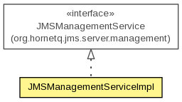

org.hornetq.jms.server.management.impl
Class JMSManagementServiceImpl
java.lang.Object
 org.hornetq.jms.server.management.impl.JMSManagementServiceImpl
org.hornetq.jms.server.management.impl.JMSManagementServiceImpl
- All Implemented Interfaces:
- JMSManagementService
public class JMSManagementServiceImpl
- extends Object
- implements JMSManagementService

| Methods inherited from class java.lang.Object |
clone, equals, finalize, getClass, hashCode, notify, notifyAll, toString, wait, wait, wait |
JMSManagementServiceImpl
public JMSManagementServiceImpl(org.hornetq.core.server.management.ManagementService managementService,
org.hornetq.core.server.HornetQServer server,
JMSServerManager jmsServerManager)
registerJMSServer
public JMSServerControl registerJMSServer(JMSServerManager server)
throws Exception
- Specified by:
registerJMSServer in interface JMSManagementService
- Throws:
Exception
unregisterJMSServer
public void unregisterJMSServer()
throws Exception
- Specified by:
unregisterJMSServer in interface JMSManagementService
- Throws:
Exception
registerQueue
public void registerQueue(HornetQQueue queue,
org.hornetq.core.server.Queue serverQueue)
throws Exception
- Specified by:
registerQueue in interface JMSManagementService
- Throws:
Exception
unregisterQueue
public void unregisterQueue(String name)
throws Exception
- Specified by:
unregisterQueue in interface JMSManagementService
- Throws:
Exception
registerTopic
public void registerTopic(HornetQTopic topic)
throws Exception
- Specified by:
registerTopic in interface JMSManagementService
- Throws:
Exception
unregisterTopic
public void unregisterTopic(String name)
throws Exception
- Specified by:
unregisterTopic in interface JMSManagementService
- Throws:
Exception
registerConnectionFactory
public void registerConnectionFactory(String name,
ConnectionFactoryConfiguration cfConfig,
HornetQConnectionFactory connectionFactory)
throws Exception
- Specified by:
registerConnectionFactory in interface JMSManagementService
- Throws:
Exception
unregisterConnectionFactory
public void unregisterConnectionFactory(String name)
throws Exception
- Specified by:
unregisterConnectionFactory in interface JMSManagementService
- Throws:
Exception
stop
public void stop()
throws Exception
- Specified by:
stop in interface JMSManagementService
- Throws:
Exception
Copyright © 2013 JBoss, a division of Red Hat. All Rights Reserved.